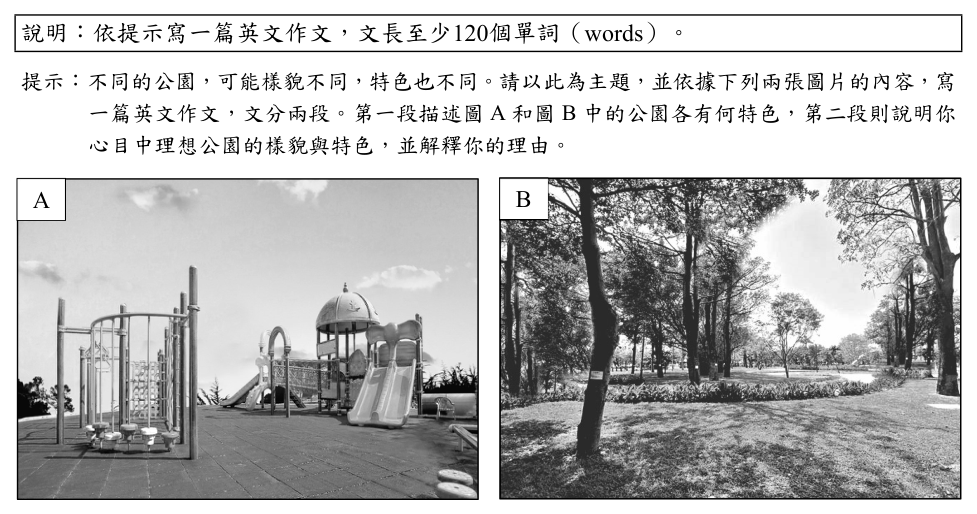
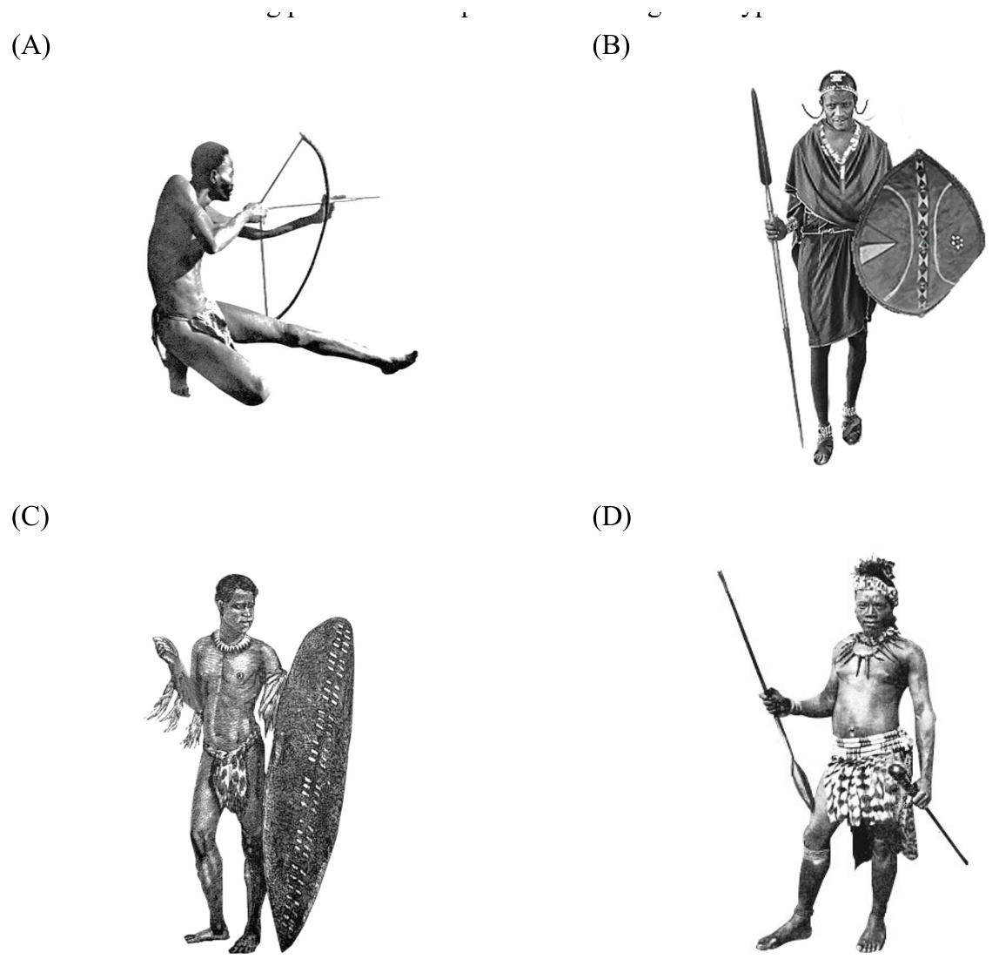

開卷有益 ／
學科能力測驗 ／ 英文 ／ 111 年111 年學科能力測驗英文試題與答案
這一頁是民國 111 年學科能力測驗英文的整份歷屆試題，共 52 題，題目與標準答案出自大考中心 學測歷年試題（依著作權法 §9，考試試題不受著作權保護），其中 52 題附有詳解。以下逐題列出題幹、選項與答案；要計時作答或記錄成績，請用線上練習。
線上作答這一科 →
全部 52 題
第 None 題
中譯英:飼養寵物並非一項短暫的人生體驗，而是一個對動物的終生承諾。
標準答案未收錄
詳解與考點 考「並非……而是……」句型：not…but…；keeping/raising a pet；lifelong commitment to an animal。要點：a transient life experience → a lifelong commitment；介系詞搭配 commitment to。陷阱：勿用 temporary 忘記 lifelong，或遺漏 to animals。（AI 整理需查證）
第 None 題
中譯英:在享受寵物所帶來的歡樂時，我們不該忽略要善盡照顧他們的責任。
標準答案未收錄
詳解與考點 考「享受……時，不該忽略……」：While enjoying the joy pets bring，we should not neglect/ignore our responsibility to take good care of them。要點：while 從屬子句、neglect + V-ing 或 our duty；陷阱：忽略「善盡」語意，應有 fulfill/take 搭配 responsibility，而非單純 not forget。（AI 整理需查證）
第 None 題
英文作文:說明︰依提示寫一篇英文作文，文長至少120個單詞（words）。提示︰不同的公園，可能樣貌不同，特色也不同。請以此為主題，並依據下列兩張圖片的內容，寫一篇英文作文，文分兩段。第一段描述圖 A 和圖 B 中的公園各有何特色，第二段則說明你心目中理想公園的樣貌與特色，並解釋你的理由。 A B
標準答案未收錄
詳解與考點 學測英文作文：兩段式，第一段描述圖 A 與圖 B 公園特色（城市公園 vs. 自然郊野公園），第二段論述理想公園並說理由。評分重點：內容切題（各圖特色明確）、組織連貫、字彙多樣、文法正確、至少 120 字。陷阱：第一段只寫一張圖，或第二段缺乏說明理由。（AI 整理需查證）
第 1 題
When Jeffery doesn’t feel like cooking, he often orders pizza online and has it ______ to his house.
（A） advanced（B） delivered（C） offered（D） stretched答案：（B）
詳解與考點 正解：have＋受詞＋過去分詞表示請他人完成某事；題幹說線上訂披薩並送到家，B delivered 表「遞送」，have it delivered to his house 即「請人把它外送到他家」，故選 B。
A：advanced 表「推進、提前」，不能表示外送。
C：offered 表「提供」，未表達把披薩送到家的動作。
D：stretched 表「延伸、拉長」，與外送語境不合。
本題考點：使役句——have＋受詞＋過去分詞表示受詞被他人處理；外送情境常用 have food delivered，delivered 表「遞送」。
第 2 題
Jane is the best ______ I have ever had. I cannot imagine running my office without her help.

（A） assistant（B） influence（C） contribution（D） politician答案：（A）
詳解與考點 正解：題幹以 Jane 指人，且「沒有她的幫忙就無法讓辦公室運作」說明空格須填表示職務身分的名詞。A：assistant 意為「助理」，Jane 是協助辦公室運作的人，語意最吻合，故 A 為正解。
B：influence 意為「影響力」，是抽象概念，不能指 Jane 這個人。
C：contribution 意為「貢獻」，同為抽象概念，不能與 Jane is the best 直接搭配指稱人。它看起來對，是因為助理確實能有很大的貢獻，但題幹要填的是人的職稱。
D：politician 意為「政治人物」，與辦公室助理的工作情境無關。
本題考點：名詞語意與指稱——先判斷空格要指人、事物或抽象概念；主詞是特定人物且語境描述其工作協助時，應選可指人的職稱名詞。
第 3 題
The temple celebrated Mazu Festival by hosting ten days of lion dances, Taiwanese operas, and traditional hand ______ shows.
（A） chat（B） quiz（C） puppet（D） variety答案：（C）
詳解與考點 正解：舞獅、歌仔戲與傳統手部表演並列，空格須與 hand 構成表演名稱。C：hand puppet show 表「手偶表演、布袋戲」，符合廟會傳統活動的語境，故 C 為正解。
A：hand chat 不是對應的表演名稱，A 錯誤。
B：hand quiz 不是表演類型，B 錯誤。
D：hand variety 不能構成指涉手偶戲的自然複合名詞，D 錯誤。
本題考點：複合名詞——由 hand＋空格＋shows 的固定搭配判斷，hand puppet show 指手偶表演；遇文化活動並列時，優先選能形成既有活動名稱的詞組。
第 4 題
The new vaccine was banned by the Food and Drug Administration due to its fatal side effects.
（A） potentially（B） delicately（C） ambiguously（D） optionally答案：（A）
詳解與考點 正解：依選項與句意，A 應置於 fatal 前，形成 potentially fatal side effects，表示「可能致命的副作用」。potentially 表「潛在地、可能地」，可用副詞修飾形容詞 fatal，語意與疫苗遭禁用的原因相合，故 A 為正解。
B：delicately 表「精巧地、微妙地」，不能說明副作用具有致命可能，B 錯誤。
C：ambiguously 表「含糊地」，與副作用是否致命無關，C 錯誤。
D：optionally 表「可選擇地」，不合禁藥原因的語意，D 錯誤。
本題考點：副詞修飾形容詞——potentially fatal 表「可能致命」；語意搭配判準——說明風險的可能性用 potentially，不以表精巧、含糊或可選擇的副詞代替。
第 5 題
______ the photos with dates and keywords help you sort them easily in your file.
（A） Tagging（B） Flocking（C） Rolling（D） Snapping答案：（A）
詳解與考點 正解：空格後的 help you sort them easily 說明動作能讓照片便於分類，且整個片語作句子主詞，關鍵是「動名詞主詞＋照片分類」。A：Tagging the photos with dates and keywords 表「為照片加上日期與關鍵字標籤」，與排序檔案的目的相符，故 A 為正解。
B：Flocking 表「群集」，不表示標記照片。
C：Rolling 表「滾動」，不會使照片依日期和關鍵字分類。
D：Snapping 表「拍攝」，拍照本身不等於替既有照片加上可排序的標籤。
本題考點：動名詞作主詞——句首 V-ing 可指一項行為；先用後文的結果反推動作，照片能依日期與關鍵字排序，應是 tagging。
第 6 題
An ______ person is usually pleasant and easy to get along with, but don’t expect that he or she will always say “yes” to everything.
（A） enormous（B） intimate（C） agreeable（D） ultimate答案：（C）
詳解與考點 正解：題幹以 pleasant、easy to get along with 描述人際特質，空格需要「隨和的」形容詞。C 的 agreeable 意為「隨和的、令人愉快的」，且不表示凡事都答應，符合語境，故 C 正確。
A：enormous 意為「巨大的」，用於大小或程度，不能描述人際相處特質。
B：intimate 意為「親密的」，通常形容關係或私密程度，不等於隨和。
D：ultimate 意為「最終的、終極的」，語意不合。
本題考點：形容詞語境辨析——描述人「好相處、隨和」用 agreeable；先以後文的語意限制排除只談大小、親密或最終狀態的字。
第 7 題
Hidden deep in a small alley among various tiny shops, the entrance of the Michelin star restaurant is barely ______ to passersby.
（A） identical（B） visible（C） available（D） remarkable答案：（B）
詳解與考點 正解：題幹說米其林餐廳入口深藏在小巷與小店之間，且有barely修飾，空格須填表示「可被看見」的形容詞。B：visible意為「看得見的」，barely visible意為「幾乎看不見」，最符合情境，故B正確。
A：identical意為「完全相同的」，不能描述入口難以看見，錯誤。
C：available意為「可取得的、有空的」，與視覺辨識無關，錯誤。
D：remarkable意為「引人注目的」，與barely形成語意衝突，錯誤。
本題考點：形容詞搭配——barely visible表示「幾乎看不見」；語境判讀——深藏巷內的入口應接可見度，而非可取得性或顯著性。
第 8 題
The original budget for my round-island trip was NT$5,000, but the ______ cost is likely to be 50 percent higher.
（A） moderate（B） absolute（C） promising（D） eventual答案：（D）
詳解與考點 正解：題幹以 original budget 對比實際可能高 50 percent 的費用，關鍵是 original 與 cost；空格須填「最終實際形成的」。D：eventual 表「最終的」，eventual cost 即最終費用，符合語境，故 D 為正解。
A：moderate 表「適中的」，不能表達原預算之後的最終結果，A 錯誤。
B：absolute 表「絕對的」，不表示費用最後的數額，B 錯誤。
C：promising 表「有前景的」，通常形容人、計畫或前景，不能修飾此處的 cost，C 錯誤。
本題考點：形容詞語意——eventual 指經過一段過程後最後出現的結果；時間對比判準——句中有 original 與後續實際結果的對照時，選能表「最終」的字。
第 9 題
After watching a TV program on natural history, Adam decided to go on a ______ for dinosaur fossils in South Dakota.
（A） trial（B） route（C） strike（D） quest答案：（D）
詳解與考點 正解：題幹說 Adam 看完自然史節目後，決定到南達科他州尋找恐龍化石；go on a quest 是「進行一趟追尋、探索」的搭配。D 的 quest 表「探索、追尋」，最符合尋找化石的語境，故 D 為正解。
A：trial 表「試驗、審判」，go on a trial 不表示出發尋找化石，A 錯誤。
B：route 表「路線」，可以指旅行路徑，卻不表示為尋找目標而進行探索，B 錯誤。
C：strike 表「罷工、打擊」，go on strike 是「罷工」的固定搭配，與尋找化石無關，C 錯誤。它看起來對，是因為 go on strike 是常見片語，但 strike 的意思與探索化石的情境完全不同。
本題考點：名詞語境與搭配——go on a quest 表「展開探索」，須由尋找化石的目標性判斷；固定片語辨析——go on strike 表「罷工」，不可只因 go on 搭配自然就選用。
第 10 題
With pink cherry blossoms blooming everywhere, the valley ______ like a young bride under the bright spring sunshine.
（A） bounces（B） blushes（C） polishes（D） transfers答案：（B）
詳解與考點 正解：櫻花盛開使山谷在春日陽光下如新嫁娘般泛紅，關鍵是擬人化的顏色變化。B 的 blushes 表「臉紅、泛紅」，可描述山谷因粉紅櫻花而呈現紅潤，故 B 為正解。
A：bounces 表「彈跳」，不能表現山谷的色澤，錯誤。
C：polishes 表「擦亮」，需有施事者擦拭，與櫻花映紅山谷不合，錯誤。
D：transfers 表「轉移」，不合句意與新嫁娘的比喻，錯誤。
本題考點：動詞語意——blush 表因羞怯或映照而泛紅；修辭判讀——擬人比喻要選能呼應「新嫁娘」形象與顏色的動詞。
A book town is a rural town in which second-hand and antiquarian bookshops are concentrated. The concept was 11 by Richard Booth, who opened the first second-hand bookshop in Hay-on-Wye, UK in 1961. Following him, many local people opened their own bookshops, and the small town soon became a model of sustainable rural development and tourism. Since the 1970s, book towns like Hay- on-Wye 12 up all over the world. Although all book towns have a great number of bookshops, that’s where the similarities 13 . Each of these towns shows unique features of its own. Some have many small private shops, while others have organizations steered by volunteers. Some even run regular activities to attract visitors. For example, an annual book festival is held in Hay-on-Wye. Clunes, in Australia, holds a monthly book talk that hosts authors to discuss their latest 14 . As digital reading is changing our traditional way of reading, book towns like Hay-on-Wye are particularly important to 15 . The feel of a book, the smell, the weight, and the knowledge that a particular book might be more than a hundred years old—all these highlight the importance of preserving the physical book as a complement to technology.
第 11 題
（A） initiated（B） represented（C） acknowledged（D） manipulated答案：（A）
詳解與考點 正解：Richard Booth 開設第一家二手書店，後續居民仿效，題幹說明的是書城概念的首創者。A：initiated 表「發起、開創」，the concept was initiated by Richard Booth 意為概念由 Booth 發起，故 A 為正解。
B：represented 表「代表」，不表示創立概念。
C：acknowledged 表「承認」，不合 Booth 首創書城的情境。
D：manipulated 表「操控」，語意不合。
本題考點：英文動詞語意——描述概念由某人首創時，用 initiate；被動語態判讀——was＋過去分詞後須選能與 by＋創始者搭配的動詞。
第 12 題
（A） spring（B） sprang（C） had sprung（D） have been springing答案：（D）
詳解與考點 正解：題幹的 Since the 1970s 表示動作從 1970 年代持續到現在，且 book towns 持續在世界各地出現，須用現在完成進行式。D：have been springing up 表「一直不斷湧現」，正確，故 D 為正解。
A：spring up 是現在簡單式，不能完整表達從過去延續至今的過程，錯誤。
B：sprang up 是過去簡單式，只指過去一次或一段已結束的發生，錯誤。
C：had sprung up 是過去完成式，必須有另一個過去時間點作為比較基準，題幹沒有，錯誤。
本題考點：時態判斷——Since＋過去時間點通常搭配現在完成式或現在完成進行式；持續發展、反覆出現的動作可用 have been V-ing。
第 13 題
（A） form（B） count（C） end（D） matter答案：（C）
詳解與考點 正解：題幹語境表達「書城的相似之處到此為止」，應選能構成 that's where similarities end 的動詞。C：end 表「結束」，that's where similarities end 意為「相似處僅止於此」，符合慣用句式，故 C 為正解。
A：form 表「形成」，不能表達相似處至此終止，錯誤。
B：count 表「計算；算數」，不合此慣用語意，錯誤。
D：matter 表「重要」，不能接在此處表示結束，錯誤。
本題考點：動詞慣用句——辨識 that's where similarities end 表「到此為止」；語境判準——描述兩事物的共同點停止時，選能表示終止的 end。
第 14 題
（A） trends（B） releases（C） agendas（D） announcements答案：（B）
詳解與考點 正解：題組句子說 Clunes 的 monthly book talk 會邀請作者討論他們的「latest ______」，關鍵是出版物的最新成果。B：releases 指「新發行的作品、出版品」，latest releases 是出版語境的慣用搭配，符合討論作者新書，故 B 為正解。
A：trends 指「趨勢」，可討論出版市場趨勢，卻不是作者所推出的具體新作，A 錯誤。
C：agendas 指「議程、待辦事項」，book talk 雖可能有活動議程，但作者受邀討論的是作品而非議程，C 錯誤。
D：announcements 指「公告」，只能指宣布消息，不能自然指作者的最新出版品，D 錯誤。
本題考點：名詞語意與搭配——先以空格所在語境判定名詞類別，作者討論的最新成果應是新發行的作品；出版語境判準——latest releases 指最新出版或發行品，不以 trends、agendas、announcements 替代。
第 15 題
（A） get their worldwide fame（B） conform to the new mode（C） make their visitors satisfied（D） keep the printed word alive答案：（D）
詳解與考點 正解：題幹所在段落強調書城保存實體書、作為科技補充的功能，空格須承接「保存印刷文字」的主旨。D：keep the printed word alive意為「讓印刷文字持續存在」，正呼應保存實體書的重要性，故D正確。
A：get their worldwide fame意為「獲得全球名聲」，與書城保存實體書的主旨無關，錯誤。
B：conform to the new mode意為「遵從新模式」，語意著重適應新潮流，與文中保存實體書的方向相反，錯誤。
C：make their visitors satisfied意為「使訪客滿意」，只談服務效果，未說明書城存在的核心意義，錯誤。
本題考點：篇章主旨推論——先找段落反覆強調的保存實體書概念，再選能概括該功能的片語；語意篩選——選項即使語法通順，仍須能銜接前後文主旨。
Airline passengers may have noticed that all plane windows have rounded edges, instead of the hard corners commonly found in our house. The round windows are indeed pleasant to the eye, but they actually were designed for reasons 16 aesthetics. In the early days of aviation, plane windows 17 square in shape. Then as commercial air travel became popular in the 1950s and airplanes began flying higher and faster, three planes mysteriously broke apart in midair. The cause? Square windows. Scientists found that sharp corners are natural weak spots where stress concentrates. The problem is 18 when airplanes fly at higher altitudes, where the difference between the inside and outside pressure increases, causing added stress. When subjected to repeated pressurization high in the sky, the four corners on a square window may 19 . Curved windows, on the other hand, distribute stress around more evenly, reducing the likelihood of cracks or breaks. Circular shapes are also stronger and resist deformation, and therefore can 20 extreme differences in pressure inside and outside of an aircraft. Thus, round windows are a major safety innovation that keeps planes from disintegrating mid-flight. They are also used on ships and spacecraft for their greater structural integrity.
第 16 題
（A） contrary to（B） except for（C） more of（D） other than答案：（D）
詳解與考點 正解：題幹說圓窗設計原因「不只是」美觀，後文隨即說明其安全功能，空格須填表示「除……之外」的介系詞片語。D：other than 表「除……之外」，句意為設計理由除美觀外另有安全考量，最合語境，故 D 為正解。
A：contrary to 表「與……相反」，須接比較或對立的對象，不能表補充另一項原因，A 錯誤。
B：except for 表「除了……以外」，通常用於排除例外；此處不是說美觀是唯一例外，而是說設計還有其他理由，B 錯誤。它看起來對，是因為 except for 也有「除……外」的字面意思，但語境需要的是添加另一項理由。
C：more of 意為「更多的……」，不能直接構成此處所需的介系詞片語，C 錯誤。
本題考點：介系詞片語語意——表「除……之外還有」用 other than，表「與……相反」用 contrary to，表排除例外用 except for；篇章銜接判準——先看前後句是補充、對立或排除，再選相應片語。
第 17 題
（A） used to be（B） were to be（C） would have been（D） must have been答案：（A）
詳解與考點 正解：空格所在句說早期飛機窗是方形，後文再說後來改採圓角窗，關鍵是過去狀態已改變。A：used to be 表「過去曾是、如今已不再是」，用於 plane windows used to be square in shape，故 A 為正解。
B：were to be 表安排、假設或未來預定，不能表達過去已改變的習慣或狀態。
C：would have been 表與過去事實相反的假設，句中沒有假設條件。
D：must have been 表對過去的推測，文中是在陳述已知歷史，非推測。
本題考點：時態語意——過去狀態已改變用 used to＋原形動詞；句型判準——假設、推測與過去事實陳述的語氣不可混用。
第 18 題
（A） disguised（B） understood（C） confronted（D） intensified答案：（D）
詳解與考點 正解：題幹語境是飛得愈高，氣壓差愈大，問題隨之惡化；空格需要表示「加劇」的過去分詞。D 的 intensified 表「加劇、惡化」，符合語意，故 D 為正解。
A：disguised 表「偽裝」，不能表示問題因高度增加而惡化，A 錯誤。
B：understood 表「被理解」，與氣壓差造成的問題變化無關，B 錯誤。
C：confronted 表「面對」，通常是人面對問題，不表示問題本身加劇，C 錯誤。它看起來對，是因為問題可被人面對，但此處主詞是問題，須選描述其程度變化的動詞。
本題考點：動詞語意與主詞搭配——先判斷空格要表達的是問題的狀態變化或人的行為；intensify——可表示問題、衝突或壓力加劇。
第 19 題
（A） cause conflict（B） rebuild strength（C） spell disaster（D） endure shock答案：（C）
詳解與考點 正解：題幹提到早期飛機的方形窗導致飛機在空中解體，空格需填能表示「招致災難」的片語。C：spell disaster 表「招致災難」，完整說明方形窗角在高空加壓下的危險後果，故 C 為正解。
A：cause conflict 表「造成衝突」，衝突不是飛機解體的結果。
B：rebuild strength 表「重建力量」，語意與事故結果相反。
D：endure shock 表「承受衝擊」，主詞應是能承受衝擊的對象，且不表達造成空難。
本題考點：英文片語語意——由前後文的因果關係判斷，描述危險設計造成嚴重後果時，用 spell disaster。
第 20 題
（A） tolerate（B） improve（C） justify（D） obtain答案：（A）
詳解與考點 正解：空格前的 can 表示需要原形動詞，後面的 extreme differences in pressure 指機艙內外極端氣壓差；A 的 tolerate 表「承受、耐受」，能說明圓形窗可承受氣壓差，故 A 為正解。
B：improve 表「改善」，不能說窗戶改善氣壓差。
C：justify 表「證明……正當」，語意不合圓窗面對壓力的功能。
D：obtain 表「獲得」，不能與氣壓差構成此處所需的動作關係。
本題考點：英文動詞語意——依受詞判斷動詞，tolerate pressure 表承受壓力；句型判讀——can 後接原形動詞，再以科學情境選擇符合功能的字。
A stunt person is a man or a woman who performs dangerous acts, usually in the television or movie industry. In this line of work, the person is paid to do daring actions that are deemed too 21 for the regular actor to perform, including jumping from heights, crashing cars, or fighting with weapons. Stunt work emerged out of 22 over time. In the early days of the film industry, actors themselves shot acrobatic acts and dangerous scenes, until they began to get injured. There were, however, no 23 crew members to perform impressive stunts at that time. If something dangerous needed to be done for a scene, the producers would hire anyone crazy or desperate enough to do it. These people were not trained to perform stunts, so they often 24 things for the first time during the actual shooting. They had to learn from their own mistakes, which 25 some their lives, and almost all suffered light or severe injuries. Beginning around 1910, audiences developed a taste for serial action movies, which 26 the use of dedicated stunt people to perform in dangerous scenes. Such demand increased with the rise of western movies, and many cowboys with masterful skills on horseback found a new 27 as a stunt person. Tom Mix and Yakima Canutt were among the most famous. The 1960s and ’70s 28 the development of most modern stunt technology, like air rams and bullet squibs. That technology has continued to evolve into the present. Today, CGI (computer generated imagery) is widely used in filmmaking, and it is now 29 to create very lifelike scenes without using real stunt people. However, CGI has difficulties of its own, and there will always be a demand for the realism and thrilling 30 of an actual stunt. So the stunt industry is probably in no immediate danger of dying off.
第 21 題
（A） possible（B） sensation（C） risky（D） cost（E） witnessed（F） professional（G） called for（H） tried out（I） necessity（J） career答案：（C）
詳解與考點 正解：題幹「too ___ for the regular actor to perform」說明這些動作對一般演員而言「太危險而不能做」，空格須填形容詞。C 的 risky 表「危險的」，與跳樓、撞車、使用武器等特技情境相符，故 C 為正解。
A、B、D、E、F、G、H、I、J：possible 表「可能的」、sensation 表「感覺」、cost 表「花費」、witnessed 表「目睹」、professional 表「專業的」、called for 表「需要」、tried out 表「嘗試」、necessity 表「必要」、career 表「職業」，不是此處所需或語意不合的形容詞，均錯誤。
本題考點：形容詞選填——先由 too＋形容詞＋for＋人＋to V 判定詞性，再依前後文選能說明特技危險性的 risky。
第 22 題
（A） possible（B） sensation（C） risky（D） cost（E） witnessed（F） professional（G） called for（H） tried out（I） necessity（J） career答案：（I）
詳解與考點 正解：題幹的 out of ______ 是固定搭配，前文說演員拍危險場面會受傷，因此需要他人代為演出，觸發「出於必要」的語意。I：necessity 意為「必要」，out of necessity 表「出於必要」，說明特技工作因實際需要而逐漸興起，故 I 為正解。
A：possible 是形容詞，不能直接置於 out of 後作此固定搭配。
B：sensation 意為「感覺、轟動」，不表示產生特技演員的必要原因。
C：risky 意為「有風險的」，是形容詞，不能填入此處。
D：cost 意為「成本、代價」，out of cost 不合慣用搭配。
E：witnessed 意為「見證」，語意及詞性皆不合。
F：professional 意為「專業人士」或「專業的」，不合 out of ______ 的原因語意。
G：called for 意為「需要、要求」，是動詞片語，不能填入介系詞 out of 後。
H：tried out 意為「試用、嘗試」，是動詞片語，不能說特技工作 emerged out of tried out。
J：career 意為「職業、生涯」，不表示特技工作興起的原因。它看起來對，是因為後文確實提到牛仔找到了新的職業，但此空要說明起源的原因，不是職業結果。
本題考點：固定搭配與詞性——out of necessity 表「出於必要」，介系詞後須接可作名詞的成分；選填時先由搭配判定詞性，再以前後文的因果關係核對語意。
第 23 題
（A） possible（B） sensation（C） risky（D） cost（E） witnessed（F） professional（G） called for（H） tried out（I） necessity（J） career答案：（F）
詳解與考點 正解：空格修飾 crew members，後文說當時只好找未受訓的任何人做危險動作，關鍵是缺乏受訓人才。F：professional 意為「專業的」，no professional crew members 表示沒有專業特技工作人員，與後文形成對比，故 F 為正解。
A：possible 意為「可能的」，不合 no ___ crew members 的語意。
B：sensation 是名詞「感覺、轟動」，不能直接修飾 crew members。
C：risky 意為「有風險的」，文意缺的是專業人員，不是危險人員。
D：cost 是名詞或動詞，詞性不合。
E：witnessed 為過去分詞，若置於 crew members 前修飾，會是「被目擊的工作人員」，與文意所需的專業特技人員無關。
G：called for 是「需要、要求」，詞性與句法不合。
H：tried out 是「試用、嘗試」，詞性與句法不合。
I：necessity 是名詞「必要性」，不能修飾 crew members。
J：career 是名詞「職業」，不能修飾 crew members。
本題考點：英文篇章選填——先由空格前後的詞性判斷需填形容詞；語意判準——professional crew members 指受訓的專業工作人員，能與後文臨時找人形成對比。
第 24 題
（A） possible（B） sensation（C） risky（D） cost（E） witnessed（F） professional（G） called for（H） tried out（I） necessity（J） career答案：（H）
詳解與考點 正解：空格所在句說未受訓的人在實際拍攝時，常常第一次去做那些危險動作；後句又說他們必須從自己的錯誤中學習，故空格需要表示「嘗試」的過去式動詞。H 的 tried out 表「嘗試、試做」，tried out things for the first time 正是「首次嘗試這些事物」，故 H 為正解。
A：possible 是形容詞，不能作 often 後的主要動詞，A 錯誤。
B：sensation 是名詞，指「感覺、轟動」，不能接在 often 後作主要動詞，B 錯誤。
C：risky 是形容詞，雖可修飾 things，但原句在 often 後缺少「做」的動詞；risky things for the first time 不能表達首次上陣，C 錯誤。它看起來對，是因為特技確實危險，但此處考的是句子所需的動詞而非危險程度。
D：cost 表「使付出代價」，需有付出代價的受詞或結果；often cost things for the first time 語意不通，D 錯誤。
E：witnessed 表「目擊」，是觀看他人行動，與特技人員親自執行危險動作及從錯誤學習不合，E 錯誤。
F：professional 是形容詞，不能作 often 後的主要動詞，F 錯誤。
G：called for 表「要求、需要」，不是親自試做動作；且主詞是未受訓的人，語意不合，G 錯誤。
I：necessity 是名詞，不能作 often 後的主要動詞，I 錯誤。
J：career 是名詞，指「職業、生涯」，不能作 often 後的主要動詞，J 錯誤。
本題考點：動詞片語——try out 表嘗試或試做，接受詞可表嘗試某事；詞性判斷——先確認 often 後需要動詞，再以後文「從錯誤中學習」核對「親自嘗試」的語意。
第 25 題
（A） possible（B） sensation（C） risky（D） cost（E） witnessed（F） professional（G） called for（H） tried out（I） necessity（J） career答案：（D）
詳解與考點 正解：句子說這些未受訓的替身演員從錯誤中學習，而那些錯誤「奪走了一些人的生命」，關鍵是固定搭配 cost sb. their life。D 的 cost 表「使某人付出代價、奪走」，cost some their lives 即「使一些人喪命」，並與後文幾乎所有人受傷呼應，故 D 為正解。
A：possible 是形容詞，不能作 which 子句的述語動詞，A 錯誤。
B：sensation 是名詞，意為「感覺、轟動」，不合 cost some their lives 的動詞位置與語意，B 錯誤。
C：risky 是形容詞，意為「有風險的」，不能直接接受詞 some their lives，C 錯誤。
E：witnessed 表「見證」，主詞 mistakes 不會「見證」人們的生命，且不符合奪命語意，E 錯誤。
F：professional 可作形容詞「專業的」或名詞「專業人士」，不能作 which 子句的述語動詞，也無法表達錯誤使人喪命，F 錯誤。
G：called for 表「要求、需要」，雖可作動詞片語，但 mistakes called for some their lives 的搭配不成立，也不表示那些錯誤奪走人命，G 錯誤。
H：tried out 表「試做、試用」，主詞 mistakes 不能「試做」人們的生命，且 tried out some their lives 的搭配不合，H 錯誤。
I：necessity 是名詞，意為「必要、必需品」，不能作 which 子句的述語動詞，I 錯誤。
J：career 是名詞，意為「職業、生涯」，不能作 which 子句的述語動詞，也不能接受詞 some their lives，J 錯誤。
本題考點：動詞慣用搭配——cost sb. their life/lives 表「使某人喪命」；詞性判讀——先確認空格需要述語動詞，再以句意排除名詞與形容詞。
第 26 題
（A） possible（B） sensation（C） risky（D） cost（E） witnessed（F） professional（G） called for（H） tried out（I） necessity（J） career答案：（G）
詳解與考點 正解：空格前的 audiences developed a taste for serial action movies 指觀眾需求增加，後面接 the use of dedicated stunt people，需填能表「要求、需要」的動詞片語。G：called for 表「要求、需要」，which called for the use of dedicated stunt people 意為這種需求促成專業特技人員的使用，故 G 為正解。
A：possible 是形容詞，不能作關係子句的謂語。
B：sensation 是名詞，不能接 the use of 作動詞用。
C：risky 是形容詞，語法位置不合。
D：cost 表「使付出代價」，與觀眾需求催生人力的語意不合。
E：witnessed 表「見證」，主詞是需求時不合此搭配。
F：professional 是形容詞，不能作謂語動詞。
H：tried out 表「試用」，需求不會試用專業特技人員。
I：necessity 是名詞，語法位置不合。
J：career 是名詞，語法位置不合。
本題考點：英文十選項篇章選填——關係子句先看所缺詞性與先行內容；call for＋名詞表「需要、要求」，可用於需求導致某種人力或措施。
第 27 題
（A） possible（B） sensation（C） risky（D） cost（E） witnessed（F） professional（G） called for（H） tried out（I） necessity（J） career答案：（J）
詳解與考點 正解：空格前是 many cowboys，後面是 as a stunt person，關鍵句為「found a new ___ as」；此處需要表示職業身分轉換的名詞。J：career 表「職業、生涯」，a new career as a stunt person 指牛仔找到特技演員這份新職業，故 J 為正解。
A、C、F：possible、risky、professional 在本題皆作形容詞，不能直接放入 a new ___ 的名詞位置；A、C、F 錯誤。
B、D、I：sensation 表「感覺、轟動」、cost 表「成本、代價」、necessity 表「必要性」，雖可作名詞，但都不能表達「作為特技演員的新職業」；B、D、I 錯誤。它們看起來可能合乎冒險工作的情境，卻不合整句的職涯語意。
E、G、H：witnessed 表「目睹」、called for 表「需要、要求」、tried out 表「試用、試演」，皆為動詞或動詞片語，不能接在 a new 後作此處的名詞；E、G、H 錯誤。
本題考點：英文文意選填——先由冠詞與修飾語判斷詞性，a new 後面需接名詞；職涯語境中 career as＋職業表示轉換至某一職業。
第 28 題
（A） possible（B） sensation（C） risky（D） cost（E） witnessed（F） professional（G） called for（H） tried out（I） necessity（J） career答案：（E）
詳解與考點 正解：空格所在句以 The 1960s and ’70s 為主詞，後接 the development of modern stunt technology，需要能表示「見證」歷史發展的動詞。E：witnessed 表「見證」，The 1960s and ’70s witnessed the development 意為 1960、70 年代見證了現代特技技術的發展，故 E 為正解。
A：possible 是形容詞，不能作此句的謂語動詞。
B：sensation 是名詞，語法位置不合。
C：risky 是形容詞，不能接 the development 作句子謂語。
D：cost 是動詞或名詞；此處若作動詞意為「使付出代價」，語意不合。
F：professional 是形容詞，不能作謂語動詞。
G：called for 表「要求、需要」，須由需求或情況作主詞，不能表示年代見證發展。
H：tried out 表「試用」，主詞應是執行試驗的人或物，與年代不合。
I：necessity 是名詞，語法位置不合。
J：career 是名詞，語法位置不合。
本題考點：英文十選項篇章選填——先依空格前後辨認詞性，再核對搭配；歷史年代作主詞時，witness 可表「見證某發展」。
第 29 題
（A） possible（B） sensation（C） risky（D） cost（E） witnessed（F） professional（G） called for（H） tried out（I） necessity（J） career答案：（A）
詳解與考點 正解：空格位於 it is now ___ to create 的形容詞位置，關鍵是 CGI 使創造逼真場景在技術上成為可行。A 的 possible 表「可能的、可行的」，possible to V 為正確用法，故 A 為正解。
B：sensation 是「感覺、轟動」，為名詞，不能放在 is 後直接修飾 to create，錯誤。
C：risky 表「有風險的」，與 CGI 可不使用真人特技也能製作場景的語意不合，錯誤。
D：cost 是「花費」或「使付出代價」，此處需要形容詞，錯誤。
E：witnessed 表「見證」，語法與語意皆不合，錯誤。
F：professional 表「專業的」，不能表達技術上是否可行，錯誤。
G：called for 表「需要、要求」，句型不合，錯誤。
H：tried out 表「試用」，句型不合，錯誤。
I：necessity 是「必要性」，為名詞，不能用於 possible to V 的位置，錯誤。
J：career 是「職業、生涯」，為名詞且語意不合，錯誤。
本題考點：篇章選填——先依句型判斷詞性，it is＋形容詞＋to V 需形容詞；字義搭配——possible to V 表「做某事是可行的」。
第 30 題
（A） possible（B） sensation（C） risky（D） cost（E） witnessed（F） professional（G） called for（H） tried out（I） necessity（J） career答案：（B）
詳解與考點 正解：題組末句將 CGI 與真人特技對比，關鍵是 realism and thrilling；空格須填能與 thrilling 並列、表示觀眾感受的名詞。B：sensation 表「感官震撼、強烈感受」，thrilling sensation 指真人特技帶來、CGI 難以完全複製的身歷其境感受，故 B 為正解。
A：possible 表「可能的」，是形容詞，不能與 realism 並列為名詞，A 錯誤。
C：risky 表「有風險的」，是形容詞，且句子要說觀眾感受到的震撼，不是特技的危險性，C 錯誤。
D：cost 表「成本」，與 thrilling 搭配不合，也不是觀眾對真人特技的需求，D 錯誤。
E：witnessed 表「目擊、見證」，是動詞過去式或分詞，不能填入名詞位置，E 錯誤。
F：professional 表「專業的、專業人士」，與 thrilling sensation 的感受語意不合，F 錯誤。
G：called for 表「需要、要求」，是動詞片語，不能作並列名詞，G 錯誤。
H：tried out 表「試用、嘗試」，是動詞片語，不能填入此處，H 錯誤。
I：necessity 表「必要性」，與 thrilling 並列後不能表達特技的刺激感，I 錯誤。
J：career 表「職業、生涯」，與真人特技帶來的感官震撼無關，J 錯誤。
本題考點：名詞選填——and 連接並列成分時，前後詞性須一致；語意搭配——realism and thrilling sensation 並列「真實感」與「刺激感受」，以對比 CGI 的限制。
Obon, or the Bon Festival, is a Japanese holiday that honors the spirits of the dead. 31 The festival usually lasts for four to five days in August. During this period, many people travel back to their hometowns and spend time with loved ones, both past and present. Though not a national holiday, Obon is surely one of the most traditional events of the year. Celebration often begins with mukaebi (welcoming fire), during which people make a small bonfire in front of their house to guide spirits upon their return back home. 32 Food offerings are presented at house altars and temples. Some regions prepare horses made of cucumbers and cows made of eggplants, hoping that the spirits will come back to Earth quickly, on a horse, and leave slowly, riding the cow. 33 Paper lanterns and offerings are sent floating down rivers to accompany the ancestors back to their resting place. Many areas will also organize bon-odori dances. The style of the dances varies from region to region but is normally based on the rhythms of taiko drums. Performers usually play on a tall stage with lanterns and banners strung all around. Participants, often dressed in light cotton kimonos, are encouraged to dance to the music around the stage. 34 Originally dedicated to the deceased, the dances have now become a symbol of the summer festival themselves.
第 31 題
（A） Some people also visit the cemetery to clean up the family graves and pray for their ancestors.（B） Such festive activities are usually held in parks, temples, and other public places around Japan.（C） Obon concludes with another bonfire, okuribi, lighting up the sky to see the ancestors’ spirits off.（D） Originating from the Chinese Ghost Festival, this annual event has evolved into a time of family reunion.答案：（D）
詳解與考點 正解：空格位於介紹 Obon 紀念亡靈之後、活動持續天數之前，需要補上節日來源與現代意義的總述。D：Originating from the Chinese Ghost Festival, this annual event has evolved into a time of family reunion. 說明盂蘭盆節源自中國鬼節，並演變為家庭團聚時刻，能自然銜接後文返鄉與親人相聚，故 D 為正解。
A：Some people also visit the cemetery... 說掃墓祭祖，應放在介紹具體祭祀活動處，不能承接開頭的節日總述。
B：Such festive activities... 的 Such 缺少明確指涉，且此處尚未介紹可概括的慶祝活動。
C：Obon concludes with another bonfire, okuribi... 說送祖先離去的送火，應置於節慶結尾，不適合放在開頭。它看起來對，是因為文中稍後確有迎火活動，但 welcome 與送別的時序相反。
本題考點：英文篇章結構——開頭介紹節日時，先補來源與總體意義，再展開時間與活動；銜接判準——代名詞指涉、活動時序與前後文主題必須一致。
第 32 題
（A） Some people also visit the cemetery to clean up the family graves and pray for their ancestors.（B） Such festive activities are usually held in parks, temples, and other public places around Japan.（C） Obon concludes with another bonfire, okuribi, lighting up the sky to see the ancestors’ spirits off.（D） Originating from the Chinese Ghost Festival, this annual event has evolved into a time of family reunion.答案：（A）
詳解與考點 正解：空格前說以迎火引導祖先靈魂，後文接著說在祭壇擺放食物供品，關鍵是祭祖活動的連續步驟。A 的 Some people also visit the cemetery to clean up the family graves and pray for their ancestors 表「有些人也會到墓園清掃家族墓地並祭拜祖先」，能把迎火、掃墓祭祖與供品串連，故 A 為正解。
B：描述節慶活動的舉行場所，應接在介紹活動或舞蹈時，未承接祭祖流程。
C：送火代表盂蘭盆節結束，置於供品與祭祀活動之前會打亂時間順序。
D：節日源流與家族團聚是背景介紹，適合段首，不宜插入具體祭祖步驟間。
本題考點：英文篇章結構——依事件時間順序選句；前後都談祖先祭祀時，選項也應延續同一祭祖行動鏈。
第 33 題
（A） Some people also visit the cemetery to clean up the family graves and pray for their ancestors.（B） Such festive activities are usually held in parks, temples, and other public places around Japan.（C） Obon concludes with another bonfire, okuribi, lighting up the sky to see the ancestors’ spirits off.（D） Originating from the Chinese Ghost Festival, this annual event has evolved into a time of family reunion.答案：（C）
詳解與考點 正解：空格前說紙燈籠與供品順河漂流，以陪伴祖先回到安息處，空格後才轉入各地舉辦 bon-odori 舞蹈；因此空格應補足送別祖先的儀式收束。C：Obon concludes with another bonfire, okuribi, lighting up the sky to see the ancestors’ spirits off. 說明盂蘭盆節以送火送別祖靈，與前句放流燈籠的送別意象連貫，故 C 為正解。
A：掃墓與祈禱屬祭祖活動，但沒有承接前句「送祖先離去」的收束作用，插在此處轉折較弱，A 錯誤。
B：Such festive activities 所指的活動在前文沒有明確複數先行內容，且此句只談場所，無法銜接送別儀式與後文舞蹈，B 錯誤。
D：Originating from the Chinese Ghost Festival 是節日來源的背景介紹，應置於文章開頭介紹 Obon 時，不宜插在儀式流程後段，D 錯誤。它看起來對，是因為 D 可補充 Obon 的背景知識，但篇章填空須優先看前後段的時間流程與指涉。
本題考點：英文篇章結構——先以代名詞、關鍵詞與時間流程找前後句的銜接；儀式依序描述迎靈、供奉與送靈時，送別內容須接在放流祖靈之後，背景起源則應放在開頭。
第 34 題
（A） Some people also visit the cemetery to clean up the family graves and pray for their ancestors.（B） Such festive activities are usually held in parks, temples, and other public places around Japan.（C） Obon concludes with another bonfire, okuribi, lighting up the sky to see the ancestors’ spirits off.（D） Originating from the Chinese Ghost Festival, this annual event has evolved into a time of family reunion.答案：（B）
詳解與考點 正解：空格前描述盂蘭舞的表演細節，空格後說舞蹈由祭亡者演變成夏祭象徵，關鍵是需先補充這類節慶活動的舉行場域。B 的 Such festive activities are usually held in parks, temples, and other public places around Japan 表「這類節慶活動通常在日本各地的公園、寺廟及公共場所舉行」，能承接舞蹈並接入其節慶意義，故 B 為正解。
A：掃墓與祭拜祖先是另一種祭祖行為，未承接盂蘭舞的活動場域。
C：說送別祖先靈魂的送火，是盂蘭盆節的結束段落，若置此處會過早結束流程。
D：說明盂蘭盆節源於中國鬼節並演變為家族團聚，適合作為節日背景開頭，不宜放在舞蹈細節之後。
本題考點：英文篇章結構——指示詞 such 要回指前文的節慶活動；選句時須兼看前句主題與後句的段落功能。
Standing proud in the savannah with their red blankets and painted shields, the Maasai people are one of the widely known symbols of East Africa. Their unique style, as remarked by Karen Blixen, author of Out of Africa, “has grown from the inside, and is an expression of the race and its history.” The Maasai are a semi-nomadic group in Kenya and northern Tanzania, wandering in bands and living almost entirely on the meat, blood, and milk of their herds. Over the years, the fearless tribesmen have stood strong against slavery, and resisted the urging of the Kenyan and Tanzanian governments to adopt a more modern lifestyle. In fact, they are one of the few tribes that have retained most of their traditions. Up until recently, the only way for a Maasai boy to achieve warrior status was to single-handedly kill a lion with his spear. Maasai clothing varies with age, gender, and place. The most recognizable piece of clothing is the shúkà, a sheet of fabric worn wrapped around the body. Red is a popular color, and women generally opt for checked, striped, or patterned pieces of cloth. Young men wear black for several months after their circumcision, a ritual signifying their coming of age. A Maasai warrior is rarely seen without his spear and shield. In Blixen’s words, “their weapons and finery are as much a part of their being as are a stag’s antlers” (a male deer’s horns). Beadwork is an important part of Maasai culture. Beaded jewelry is made by women, and is famous for its complexity. Natural materials such as clay, shells, and ivory were used before trading with the Europeans in the 19th century. They were then replaced by colorful glass beads, allowing for more detailed beadwork and color patterns. Multicolored beadwork is popular among both men and women. Each color holds a special meaning: White stands for peace, green for land and production, while red—the most favored color among the Maasai—is the symbol of unity and bravery.
第 35 題
Which of the following pictures best represents the image of a typical Maasai warrior?

本題選項為上圖中的 A／B／C／D，請對照圖片作答。
答案：（B）
詳解與考點 正解：題幹問典型 Maasai warrior 的圖像，關鍵是文章所列的外觀特徵：紅色 shúkà 披布、長矛、盾牌與串珠飾品。B 圖同時呈現這些特徵，故 B 為正解。
A：圖像特徵未能對應紅色披布、長矛、盾牌與串珠飾品的組合，不能代表文中的典型馬賽勇士。
C：圖像特徵與文章描述不符，缺少判讀典型馬賽勇士所需的關鍵裝束或配備。
D：圖像特徵與文章描述不符，不能由其外觀辨認為典型馬賽勇士。
本題考點：圖像與文本對照——先圈出人物描述中的服飾、工具與飾品，再找同時符合多項特徵的圖片；人物文化辨識——不可只憑單一物件判斷，須核對整組特徵。
第 36 題
What can we learn from the passage about the Maasai people?
（A） They have been urged by governments to leave behind their traditions.（B） They resist foreign influence because they were enslaved in the past.（C） A boy has to kill a lion by himself before becoming an adult.（D） A Maasai woman is usually good at beadwork and farming.答案：（A）
詳解與考點 正解：題幹問文章可得知的事實，應回到原文細節核對。A 的 leave behind their traditions 對應文中政府敦促馬賽人採取較現代的生活方式，而他們加以抗拒；採取現代生活方式即意指放下原有傳統，故 A 為正解。
B：文中說馬賽人曾堅強對抗奴役，也抗拒政府敦促，但沒有說抗拒外來影響的原因是過去遭奴役，錯誤。
C：原文說直到最近，男孩必須獨自殺獅才能取得 warrior status；warrior 是戰士身分，不等於成為成人，錯誤。
D：文中說婦女製作串珠飾品，未說她們通常擅長耕作，錯誤。它看起來可能選 C，是因為文中另提割禮象徵成年，容易把成年儀式與成為戰士的條件混為一談。
本題考點：英文閱讀細節題——以原文可直接支持的敘述為準；語意辨析——warrior status 是戰士身分，coming of age 才是成年；因果判讀——兩件事同時出現不代表原文建立因果關係。
第 37 題
Which of the following is true about Maasai clothing and beadwork?
（A） Striped and patterned cloth is preferred by young adults.（B） Young men cannot wear black until they become warriors.（C） Colorful glass jewelry became popular after the 19th century.（D） The color of the shúkà represented one’s importance in the tribe.答案：（C）
詳解與考點 正解：「Natural materials … were used before trading with the Europeans in the 19th century. They were then replaced by colorful glass beads」，then 明確表示 19 世紀與歐洲人交易後的材料改變。C：彩色玻璃珠在 19 世紀後取代天然材料，因而成為珠飾材料，符合文意，故 C 為正解。
A：文中說女性一般選擇格紋、條紋或有圖案的布料，未說是年輕成人偏好，A 錯誤。
B：年輕男性在割禮後會穿數個月黑衣，割禮象徵成年；文中未說必須先成為勇士才能穿黑衣，B 錯誤。
D：文中說紅、白、綠等顏色各有團結、勇敢、和平、土地與生產等意義，未說 shúkà 的顏色代表個人在部落中的重要性。它看起來對，是因為各色確有象徵意義，但象徵意義不等於社會地位，D 錯誤。
本題考點：英文閱讀細節——遇到 before、then 等時間連接詞，依原文順序核對事件；資訊範圍判準——原文僅說女性偏好與顏色象徵時，不擴張為特定年齡層或社會地位。
第 38 題
Why does the author quote Blixen’s comment at the end of the third paragraph?
（A） To explain how Maasai warriors hunt for deer in the wild.（B） To exemplify the types of weapons used by Maasai warriors.（C） To emphasize that weapons are an inseparable part of a Maasai warrior’s outfit.（D） To show the similarities between the behavior of a Maasai warrior and that of a male deer.答案：（C）
詳解與考點 正解：第三段末引用 Blixen 的話，將勇士的武器與裝飾比作雄鹿的鹿角，意在強調武器是馬賽勇士身分與裝束中不可分割的一部分，故 C 為正解。
A：引文沒有說明馬賽勇士如何獵鹿，雄鹿鹿角只是比喻，A 錯誤。
B：引文雖提到 weapons，卻未列舉或示範武器種類；其重點在武器與勇士身分的緊密關係，B 錯誤。
D：引文不是比較勇士與雄鹿的行為，而是以鹿角比喻武器對勇士的重要性，D 錯誤。它看起來對，是因為引文出現 stag，但這是修辭上的類比，不能按字面解作行為相似。
本題考點：英文閱讀引用目的——先找引文在段落中承接的主題，再辨析比喻所凸顯的關係；比喻判準——將某物說成生命一部分，強調的是不可分割的重要性，不是字面行為或分類。
A hard hat is a helmet used mostly at worksites to protect the head from injuries due to falling objects. Since its introduction in the early 20th century, the headgear has saved countless lives and is considered the number one safety tool for construction workers. The hard hat was invented in 1919 by Edward W. Bullard, who had just returned from World War I. Before the war, workers used to smear their hats with coal tar for protection of their head. Bullard, having witnessed the life-saving power of the metal helmet in the War, decided to produce a head protection device that was affordable for every worker and lightweight enough to be worn all day long. The Hard Boiled Hat was thus born, using steamed canvas and leather, covered with black paint, and featuring a suspension system to reduce impact. Soon, hard hats became widely used. The headgear was later made mandatory at construction sites in major construction projects, such as the Hoover Dam in 1931 and the Golden Gate Bridge in 1933. Over the past century, hard hats have advanced considerably, evolving from canvas and leather to aluminum, fiberglass, and, eventually, to thermoplastic. Recently, new models have been introduced and accessories added to meet the needs of laborers working on various job sites. For instance, a ventilated hard hat was developed to keep wearers cooler, and see-through face shields were attached to better see the hazards lurking above. Today, attachments include radios, sensors, cameras, and a lot more. A common color code has also been developed for recognizing people and their roles on site. Yellow is used for general laborers and contractors, white (or sometimes black) for supervisors and managers, and green for inspectors and new workers. New products continue to expand the market. Global sales of hard hats totaled USD 2.1 billion in 2016, and are expected to reach USD 3.19 billion in 2025.
第 39 題
Which of the following aspects about hard hats is NOT discussed in the passage?
（A） Their functions.（B） Their appearances.（C） Their materials.（D） Their limitations.答案：（D）
詳解與考點 正解：題幹問「未討論」的面向，應逐項回到文章找明示內容。D：文章說明安全帽的功能、外觀與材料演變，卻未談及其限制或局限性，故 D 為正解。
A：首段說安全帽用來保護頭部免於落物傷害，後文又提通風設計、面罩與附件，功能有討論，A 錯誤。
B：文章提到黑色塗層、顏色編碼，以及附加面罩等，外觀有討論，B 錯誤。
C：文章列出 canvas、leather、aluminum、fiberglass、thermoplastic 等材料，材料有討論，C 錯誤。它看起來容易被選，是因為文章沒有集中用一段介紹外觀，但顏色、面罩與材質演變已提供相關資訊。
本題考點：篇章涵蓋面判讀——題目問未提及時，逐一回原文找直接或具體例證；資訊分類——功能、外觀、材料與限制是不同面向，出現材料或配件不等於討論限制。
第 40 題
In what order did the following protective hats appear? a. fiberglass hats b. hats with see-through shields c. hats with canvas and leather d. hats with tar over them
（A） d→c→a→b（B） c→d→b→a（C） c→b→a→d（D） d→c→b→a答案：（A）
詳解與考點 正解：文章的時間詞：戰前使用煤焦油、1919 年出現帆布皮革帽、其後演進為玻璃纖維、近年才加上透明面罩。煤焦油帽在戰前出現；帆布皮革帽是 1919 年的 Hard Boiled Hat；玻璃纖維帽是其後材料演進的成果；透明面罩則是近年新款才加裝。因此題幹項目的順序為 d→c→a→b，對應 A，故 A 為正解。
B：此項排成 c→d→b→a，但煤焦油的使用在 1919 年帆布皮革帽以前，且玻璃纖維早於近年的透明面罩，B 錯誤。
C：此項把帆布皮革帽放在煤焦油帽以前，與文章所說戰前先使用煤焦油不符，C 錯誤。
D：此項將透明面罩排在玻璃纖維之前，但透明面罩是近年為因應工地需求新增的配件，D 錯誤。它看起來對，是因為兩者都屬於現代安全帽的改良，卻忽略文章先列材料演進、後述近年配件。
本題考點：英文篇章時序——以 before the war、in 1919、later、recently 等時間線索排序；細節定位判準——材料演進中的 fiberglass 先於近年新增的 see-through face shields。
第 41 題
According to the passage, which of the following statements is true about the hard hat?
（A） Global sales have doubled every ten years.（B） The inspiration came from the inventor’s wartime experience.（C） It was standard equipment for construction workers in the 1920s.（D） Different colors are used in different industries to signal the roles of people on site.答案：（B）
詳解與考點 正解：文中說 Bullard 從第一次世界大戰返國，曾目睹金屬頭盔救命的力量，於是研發安全帽；關鍵是發明靈感的來源。B：安全帽的靈感來自發明者的戰時經驗，故 B 為正解。
A：全球銷售額 2016 年為 USD 2.1 billion，2025 年預估 USD 3.19 billion，並非每 10 年翻倍。
C：大型工地在 1931 年才開始強制使用，不能說 1920 年代已是標準裝備。
D：顏色碼用於辨識同一工地上人員的角色，不是不同產業各自使用不同顏色。
本題考點：英文閱讀細節——核對人物、時間與數據三類資訊；字詞辨析——wartime experience 表「戰時經驗」，可作發明構想的來源。
第 42 題
Which of the following words are used in the passage to refer to the hard hat? a. tool
（A） a, b, d, e b. code c. device d. helmet e. accessory f. headgear（B） a, c, d, f（C） c, d, e, f（D） a, d, e, f答案：（B）
詳解與考點 正解：題幹問文中哪些詞用來指稱 hard hat，須逐一回到原文確認指涉對象。B：a. tool 出現在 number one safety tool，c. device 指頭部防護裝置，d. helmet 與 f. headgear 都指安全帽，故 a、c、d、f 對應 B。
A：含 b. code 與 e. accessory；code 指顏色碼，accessory 指附加配件，皆非安全帽本身。
C：含 e. accessory，該詞不指安全帽。
D：含 e. accessory，該詞不指安全帽。
本題考點：字詞指稱——將代稱放回原句，確認其所指是否為同一事物；詞義判準——code 是規則或編碼，accessory 是附件，不能與本體混同。
Zebrafish, named for their characteristic stripes, have been a popular test subject for researchers. Only a few centimeters in length, the fish breed easily in captivity, grow quickly, and their transparent body makes it easy to study their organs. Above all, they possess some amazing “self-healing” power. When part of their heart is removed, they can grow it back in a matter of weeks. When blinded, they can quickly regain the ability to see. Recent studies show that humans and zebrafish have the same major organs and share 70 percent of the genes. Moreover, 84 percent of human genes associated with disease find a counterpart in zebrafish. Scientists thus hope that understanding the self-healing mystery of the fish may one day allow humans to regenerate such organs as eyes, hearts, and spines. Researchers at Vanderbilt University are particularly interested in zebrafish retina regeneration. They have learned that damage of retina can cause blindness in zebrafish, yet it only takes about three to four weeks before vision is restored. The structure and cell types of zebrafish retinas are almost identical to those of humans. If the process can be replicated in humans, it may give rise to new treatments for blindness caused by retinal damage. In order to know exactly how zebrafish retina is regenerated, the team looked at the neurotransmitter gamma-aminobutyric acid (GABA), a chemical messenger in the brain that reduces the activity of neurons. They found that lowering GABA levels in zebrafish can trigger retina regeneration, while a high level of GABA concentration will suppress the regeneration process. This suggested that GABA plays an important role in the fish’s ability to regain their sight. The team is beginning to test the GABA theory on mice. If that works, human trials will be next on the agenda. If the research proves successful in humans, some of the nearly 40 million blind people worldwide may one day have a tiny, striped fish to thank.
第 43 題
What can we learn about zebrafish from the passage?
（A） How they should be studied in labs.（B） Where they derive their regenerative ability.（C） Why they share humans’ genetic code.（D） What they may offer in medical advancements.答案：（D）
詳解與考點 正解：題幹問全文可得知斑馬魚的何種資訊，關鍵是文章由自癒能力、與人類的相似性，推到治療人類失明的研究前景。D：斑馬魚可能為醫學進展提供貢獻，最能涵蓋全文主旨，故 D 為正解。
A：文章提到牠們易於飼養與研究，但重點不是說明實驗室中應如何研究。
B：文章尚在探究 GABA 與視網膜再生的關係，未確定再生能力的來源。
C：文章陳述與人類共享基因的比例，未解釋為何共享。
本題考點：英文主旨——整合各段共同指向的研究意義，不選單一細節；推論判準——研究中的可能機制不可誤作已證實原因。
第 44 題
Which of the following statements is true regarding GABA in zebrafish?
（A） Increasing GABA level facilitates neuron activities.（B） There is a high level of GABA in the brain of zebrafish.（C） Lowering GABA levels in the brain can stimulate retina regrowth.（D） GABA contains chemical elements that trigger the growth of neurons.答案：（C）
詳解與考點 正解：題幹問 GABA 在斑馬魚中的作用，關鍵是文中直接指出「lowering GABA levels in zebrafish can trigger retina regeneration」。C：降低腦中 GABA 濃度可刺激視網膜再生，與原文完全相符，故 C 為正解。
A：文中說 GABA 是降低神經元活動的化學傳訊物質，升高 GABA 濃度又會抑制再生，並非促進神經元活動，A 錯誤。
B：文中只比較降低與高濃度 GABA 對再生的效果，未說斑馬魚腦中原本具有高濃度 GABA，B 錯誤。
D：GABA 是化學傳訊物質，文中沒有說它含有促使神經元生長的化學元素，D 錯誤。
本題考點：英文閱讀細節題——以原文的因果句逐字比對選項；資訊強度判準——原文只說某濃度的效果時，不能推成自然狀態或未提及的成分功能。
第 45 題
Which of the following is closest in meaning to “replicated” in the third paragraph?
（A） Reproduced.（B） Reassembled.（C） Recycled.（D） Restored.答案：（A）
詳解與考點 正解：replicated 出現在「If the process can be replicated in humans」，指斑馬魚的再生過程若能在人類身上重現。A：reproduced 意為「再製、複製」，最接近 replicated，故 A 為正解。
B：reassembled 意為「重新組裝」，著重把零件裝回，非重現同一生理過程。
C：recycled 意為「回收再利用」，語意無關。
D：restored 意為「恢復」，可指恢復功能，但不等於複製再生機制。
本題考點：字彙語境——以句中受詞 process 判斷 replicated 是重現過程；近義辨析——reproduce 強調複製，restore 強調恢復原狀。
第 46 題
According to the passage, which of the following is an opinion, but NOT a fact?
（A） Humans and zebrafish have 70 percent of genes in common.（B） Zebrafish can quickly recover vision after damage to the retina.（C） Scientists are testing if the GABA theory works on mice as it does on zebrafish.（D） Understanding regeneration in zebrafish may allow humans to regrow their organs.答案：（D）
詳解與考點 正解：題幹要找「意見而非事實」，關鍵是 may allow，表示尚未證實的未來可能；D 說明理解斑馬魚的再生機制「可能」讓人類再生器官，是科學家的推測與期待，故 D 為正解。
A：文章明述 humans and zebrafish share 70 percent of the genes，70% 是可查證的研究數據，屬事實。
B：文章說斑馬魚視網膜受損後約三至四週可恢復視力，這是研究觀察結果，屬事實。
C：文章明述研究團隊正開始在老鼠身上測試 GABA theory，這是正在進行的研究事實。它看起來像意見，是因為研究尚未完成，但「正在測試」本身仍是可查證的事實敘述。
本題考點：事實與意見辨析——有研究數據、觀察結果或正在進行的行動可驗證者為事實；推測語氣判讀——may、hope 等表未來可能或期待的語句，通常屬意見或推論。
並依規定用筆作答。第 47 至 49 題為題組 To support refugees and people facing crises around the world, the International Olympic Committee created the Refugee Olympic Team. Refugee athletes have been invited to compete in the Olympic Games since 2016. Here are two refugee athletes and their stories. Yusra Mardini is a swimmer who grew up in Popole Misenga was born in the Democratic the war-torn country of Syria. Due to the unstable Republic of the Congo. When he was nine, the political situation there, Yusra sometimes had to country’s civil war claimed the life of his mother train in pools under roofs that had been blown open and left him homeless. Escaping from the war zone, by bombings. In 2015 when she was just a 17-year-old, her house was destroyed in the civil war, so she decided he wandered alone for a week in a rainforest before being rescued and taken to a center for displaced children in the capital, Kinshasa. to flee her home country. She managed to reach There, Popole discovered judo, from which he Turkey through Lebanon. From Turkey, she boarded gained strength in body and mind. “Judo helped me a small boat that held 20 people and set sail into the by giving me serenity, discipline, commitment— deep waters of the Aegean Sea. But 30 minutes later, everything,” he said. He trained hard and became a the engine stopped and the boat began to sink. Yusra professional judoka. However, each time he lost a dove into the cold water, and—with the help of her competition, his coaches would lock him in a cage sister and two men—swam and pushed the boat for for days, feeding him only coffee and bread. over three hours to reach the Greek island of Lesbos. Finally, when he was cruelly abused for not They saved everyone aboard. winning medals at the 2013 World Championships Yusra eventually settled in Germany and has in Brazil, he decided to seek protection. since worked to inspire others to pursue their Popole was granted asylum in 2014 by dreams. Her incredible story and superior swimming Brazilian government and later continued judo skills won her the opportunity to participate in the training at a youth facility. He made his Olympic Olympic Games. She was a member of the Refugee debut at Rio 2016. He also represented the Refugee Olympic Team for both the 2016 Rio Games and Olympic Team in 2021 Tokyo Games. 2021 Tokyo Games.
第 47 題
請根據選文內容，從兩則故事中各選出一個單詞（word），分別填入下列兩句的空格，並視語法需要作適當的字形變化，使句子語意完整、語法正確，且符合全文文意。（填空，4分） With her amazing courage and swimming skills, Yusra Mardini was not only able to save lives but also fulfill her dream of (A) in the Olympic Games. Judo helped Popole Misenga to be strong both physically and mentally, and gave him the courage to escape from the (B) of his coaches.
標準答案未收錄
詳解與考點 （A）空格考 compete 的動名詞：Yusra 的游泳專長使她得以在奧運「competing」；（B）空格考 abuse/control：Popole 受教練虐待，文中用 cage、abuse 描述，答案為 abuse（abuses）或 control。關鍵在回溯原文動詞，勿填文章未出現的字。（AI 整理需查證）
第 48 題
Which word in Popole Misenga’s story means “protection given by a country or embassy to refugees from another country”?（簡答，2分）
標準答案未收錄
詳解與考點 考詞彙理解：題目要求找出「一個國家或大使館給予外國難民的保護」，對應文中 Popole 段落「Popole was granted asylum」，答案為 asylum。陷阱：勿答 protection（是題目釋義用字，非文章答案字）。（AI 整理需查證）
第 49 題（多選）
請從下列(A)到(F)中，選出對Yusra Mardini 和 Popole Misenga都正確的選項。（多選題，4分）
（A） Being an Olympic medalist.（B） Growing up in an orphanage.（C） Joining the Olympic Games more than once.（D） Leaving his/her hometown because of war.（E） Showing talent in sports after going to a foreign country.（F） Traveling through several countries before securing protection.答案：（C）（D）
詳解與考點 正解：題幹要求找出 Yusra Mardini 和 Popole Misenga 兩人共同具備的經歷，應逐項比對人物資料。C：兩人都參加過 2016、2021 兩屆奧林匹克運動會，正確。D：Yusra 因敘利亞內戰、Popole 因剛果內戰離開家鄉，正確。
A：文中未提及兩人獲得奧運獎牌，無法支持兩人皆為 Olympic medalist，錯誤。
B：住在孤兒中心的是 Popole，非兩人共同經歷，錯誤。
E：兩人的運動才能都在母國已展現，不是到外國後才顯露，錯誤。
F：途經多個國家逃難的是 Yusra，非兩人共同經歷，錯誤。
本題考點：人物比較題——每個選項都須同時符合兩名人物；共同條件判準——一人專屬或文章未共同支持的經歷即不能選，兩人皆具備的多次參加奧運與因戰離鄉才成立。
其他年度
回到學科能力測驗英文的年度總覽 ，
或到學科能力測驗題庫首頁 看其他科目。
題目與標準答案出自大考中心 學測歷年試題（依著作權法 §9，考試試題不受著作權保護）。依中華民國《著作權法》第 9 條第 1 項第 5 款，
依法令舉行之各類考試試題不得為著作權之標的，得自由利用。詳解為 AI 整理的學習輔助，
並非官方標準答案 ；中華民國會修訂，引用前請對照現行版本查證。